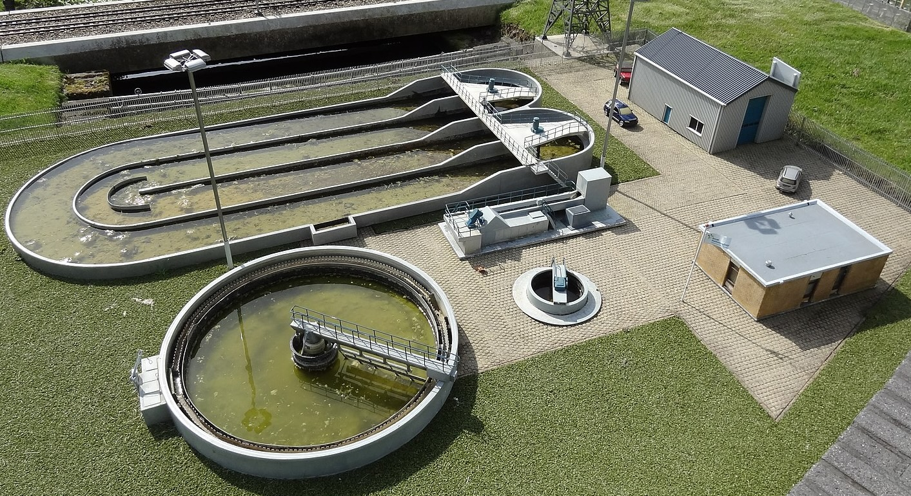
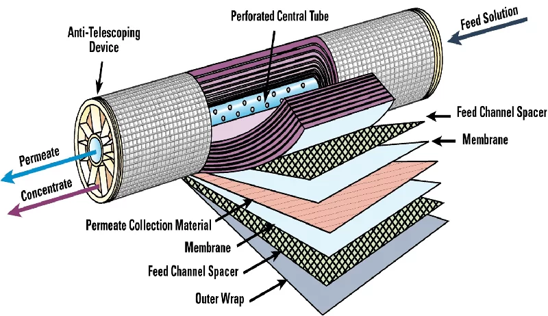

Le Traitement des eaux usées
Selon notre sondage,
ODD 6: Eau propre et assainissement
Étant une composante essentielle de la gestion durable de l'eau, il contribue à réduire la pollution de l'eau et à assurer un approvisionnement en eau propre et sûre pour les populations. Il s'inscrit dans le cadre plus large de la gestion intégrée des ressources en eau et de la protection de l'environnement.

Révolutionner la Gestion des Eaux Usées à Beyrouth : Innovations Scientifiques pour un Avenir Durable
Beyrouth a longtemps fait face à des défis en matière de gestion des eaux usées, notamment en raison de son infrastructure vieillissante, de son urbanisation rapide et de ses difficultés économiques. En 2024, on estime que près de 70% des eaux usées sont déversées directement dans la mer Méditerranée sans traitement adéquat. La majorité des installations de traitement des eaux usées sont vieilles, inefficaces et inadéquates pour répondre aux besoins croissants de la population et aux normes environnementales. Les déversements des eaux usées non traitées dans les rivières, les cours d'eau et même en mer sont des problèmes pressants, ce qui mène à une contamination des sources d'eau, engendrant des problèmes de santé publique et cause des dommages environnementaux.
Systèmes de traitement décentralisés :
Les systèmes de traitement décentralisés fonctionnent en utilisant divers processus et technologies pour purifier l'eau, traiter les déchets et produire de l'énergie de manière locale, souvent à petite échelle. Voici une explication détaillée en utilisant des concepts scientifiques issus de la chimie, de la physique, des mathématiques et de la biologie : - Traitement de l'eau : Les systèmes de traitement décentralisés utilisent des processus chimiques tels que la coagulation, la floculation, la filtration et la désinfection pour éliminer les contaminants de l'eau. Par exemple, la coagulation implique l'ajout de produits chimiques comme le sulfate d'aluminium pour regrouper les particules en suspension, facilitant ainsi leur élimination par filtration.- Traitement de l'eau :
- Coagulation : Dans le processus de coagulation, un sel de métal comme le sulfate d'aluminium (Al2(SO4)3) est ajouté à l'eau. Voici l'équation chimique simplifiée : Al2(SO4)3 + 6H2O → 2Al(OH)3 + 3H2SO4
- Désinfection : Le chlore est souvent utilisé pour la désinfection de l'eau. Son action peut être décrite par : Cl2 + H2O → HOCl + HCl HOCl → H+ + OCl- Doc 2: Systèmes de traitement par membranes immergées (IMBR) - Traitement des déchets :
- Digestion anaérobie : Dans la digestion anaérobique, la matière organique est décomposée par des bactéries dans un environnement sans oxygène. Voici un exemple simplifié de la dégradation du glucose (C6H12O6) en méthane (CH4) et en dioxyde de carbone (CO2) :
C6H12O6 → 3CO2 + 3CH4 - Épuration par les plantes : Les plantes aquatiques utilisées dans les systèmes de phytoépuration absorbent les nutriments et filtrent les contaminants. Par exemple, dans le processus de nitrification, les bactéries convertissent l'ammonium (NH4+) en nitrate (NO3-) :
2NH4+ + O2 → 2NO2- + 4H+ + 2H2O
2NO2- + O2 → 2NO3- - Dégradation des déchets : Dans le cas du traitement des déchets, des réactions chimiques peuvent être utilisées pour décomposer les composés organiques en produits plus simples et moins nocifs. Par exemple, la digestion anaérobi, processus biologique utilise des micro-organismes pour décomposer la matière organique en l'absence d'oxygène. Les bactéries méthanogènes digèrent les déchets organiques pour produire du méthane (biogaz) et du dioxyde de carbone.
- Filtration : Les systèmes de traitement décentralisés utilisent la physique des membranes pour filtrer les particules et les contaminants de l'eau. La filtration membranaire repose sur le principe de la séparation des particules en fonction de leur taille et de leurs propriétés de surface à travers une membrane semi-perméable.
- Calcul de la taille de pore :
La taille des pores dans une membrane est un paramètre crucial qui détermine quels contaminants seront retenus. La taille de pore peut être calculée à partir de la taille moléculaire des espèces à filtrer. Par exemple, pour les membranes utilisées dans l'ultrafiltration de l'eau, la taille des pores est généralement de l'ordre de quelques nanomètres (10^-9 m). - Loi de Darcy :
La filtration à travers une membrane peut être décrite par la loi de Darcy, qui est une équation fondamentale de la mécanique des fluides. Cette loi relie le débit volumique à travers la membrane (Q), la surface de la membrane (A), la perméabilité de la membrane (k), la différence de pression (ΔP) et l'épaisseur de la membrane (L). L'équation de Darcy est : Q=(k*A*ΔP)/μ où (μ) est la viscosité du fluide. - Équation de la filtration tangentielle :
Dans le cas de la filtration tangentielle, où le flux est parallèle à la surface de la membrane plutôt que perpendiculaire, l'équation de la filtration peut être modifiée pour prendre en compte le coefficient de rétention (S) et la pression transmembranaire (ΔP)L'équation devient : Q = S *A*ΔP où S dépend de la configuration spécifique de la membrane et du fluide.
- Digestion anaérobie : Dans la digestion anaérobique, la matière organique est décomposée par des bactéries dans un environnement sans oxygène. Voici un exemple simplifié de la dégradation du glucose (C6H12O6) en méthane (CH4) et en dioxyde de carbone (CO2) :
- Osmose inverse
Technologies de traitement avancées : L'adoption de technologies de traitement avancées telles que l'osmose inverse, la filtration par membrane et la désinfection ultraviolette peut améliorer considérablement l'efficacité du traitement des eaux usées, en produisant de l'eau de qualité plus élevée pour une réutilisation sécurisée ou un rejet dans l'environnement.- Inverse (OI) :
Processus de filtration qui utilise une membrane semi-perméable pour éliminer les solutés, les particules et les contaminants de l'eau. Les membranes d'OI peuvent retenir efficacement les ions, les composés organiques et même les virus et les bactéries, produisant ainsi une eau de haute qualité. Parfait pour le dessalement de l'eau de mer et la récupération de l'eau dans les processus industriels. - Filtration par Membrane :
Comprend différentes techniques telles que la microfiltration, l'ultrafiltration, la nanofiltration et l'osmose inverse. La microfiltration et l'ultrafiltration éliminent les particules, les bactéries et les protozoaires. La nanofiltration est efficace pour éliminer les ions spécifiques et les matières organiques dissoutes. Ces technologies de filtration produisent une eau plus propre et plus sûre pour diverses applications, y compris la potabilisation et le recyclage.  - Désinfection Ultraviolette (UV) :
Utilise des rayons ultraviolets pour détruire les micro-organismes pathogènes en endommageant leur matériel génétique. Élimine efficacement les bactéries, les virus et les protozoaires sans ajouter de produits chimiques. Idéal pour la désinfection finale de l'eau traitée avant sa distribution ou sa réutilisation.
- Inverse (OI) :